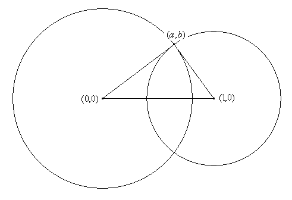
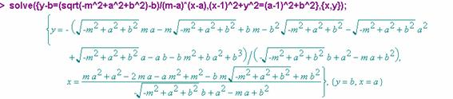
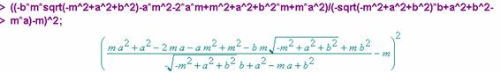
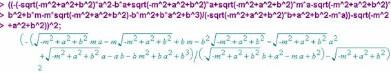
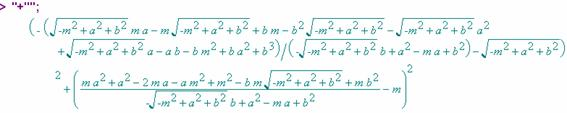
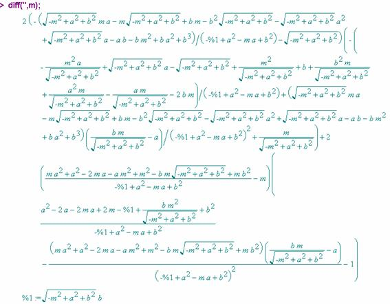
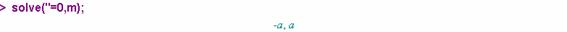

Nicolás Rosillo Fernández.
Dpto. Matemáticas, IES Máximo Laguna.
Santa Cruz de Mudela, Ciudad Real
nrosillo@olmo.pntic.mec.es
Dado un triángulo
cualquiera, circunscribir en él el triángulo equilátero de área máxima.
Tras la construcción con CABRI del triángulo equilátero circunscrito a
un triángulo cualquiera, se postula la tesis que aparece en el applet
siguiente:
La demostración formal consistirá en demostrar que el mayor segmento
que se puede formar con extremos en dos circunferencias dadas y conteniendo al
punto de intersección de ambas es aquel paralelo al segmento formado por los
centros de las circunferencias. Para ello, nos ayudaremos de un programa de
cómputo simbólico, concretamente Maple V Release 3.
Sin pérdida de generalidad, se supone una configuración como la
siguiente:

Las circunferencias tienen de ecuaciones y
Supongamos un punto de abcisa m
en la circunferencia de centro . De las dos ordenadas posibles escogemos la positiva: , por tanto,
La recta que pasa por y tiene de ecuación . Se halla entonces la intersección de dicha recta con la
circunferencia centrada en .

Sea la solución obtenida distinta de
es

es

por lo que la longitud del segmento de extremos y , es de la forma

Derivamos la expresión con respecto a m

e igualamos dicha expresión a cero

El resultado obtenido indica que la expresión del segmento de extremos y tiene como candidatos a extremos relativos los valores y . El segundo valor obtenido es el mínimo, puesto que en ese caso los dos extremos del segmento coinciden. El primer valor, , es el máximo, e indica (tal y como se observaba en el applet cabrijava) que el segmento ha de ser paralelo al formado por los centros de las circunferencias, como se pretendía demostrar.